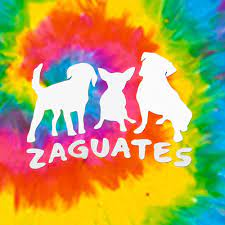

Zaguates
- Estamos desde el 2014. Cuidamos a 450 animales en adopción
Realizamos campañas de castración junto al Gobierno - Rescatamos en los barrios de emergencia de CABA
- Sumate a nuestro equipo de voluntarios
El Campito

- El refugio tiene una población que ronda los 750 animales
- En el refugio ingresan alrededor de 100 animales destruidos, mes a mes. Rescatamos en Monte Grande y alrededores
- Sumate a nuestro equipo de voluntarios
Patitas Glew

- Estamos desde el 2016. Rescatamos a más de 300 animales
- Rescatamos en Glew y alrededores
- Sumate a nuestro equipo de voluntarios
Don Torcuato
- Cuidamos a más de 350 animales rescatados
- Rescatamos en Don Torcuato y alrededores
- Sumate a nuestro equipo de voluntarios
Patitas En Casa

- Somos un grupo de 200 voluntarios colaborando, tanto como tránsito,
traslado o economicamente - Rescatamos en zonas de Gran Buenos Aires
- Sumate a nuestro equipo de voluntarios
Patitas Al Rescate
- Estamos desde el 2018. Rescatamos a más de 450 animales
- Rescatamos en zona Sur de Bs As
- Sumate a nuestro equipo de voluntarios